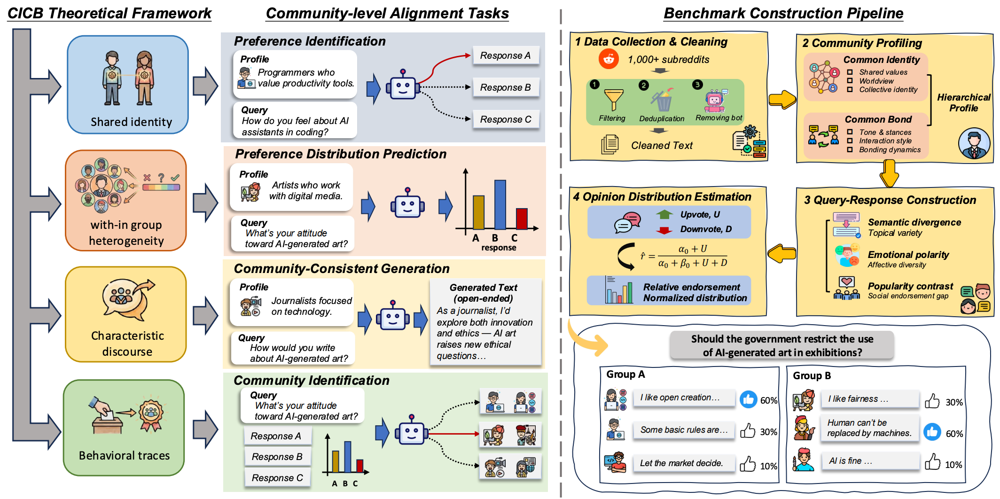

Current LLM alignment strategies primarily follow two paths: a "one-size-fits-all" approach that assumes universal values but marginalizes minority norms, or an "individual-level" approach that is prohibitively expensive and suffers from data sparsity.
Recognizing that human society is organized into social clusters, we propose Community-Level Alignment as a scalable "middle ground". We introduce CommunityBench, the first large-scale benchmark for this purpose, featuring 12,149 instances across 6,919 social communities derived from Reddit.
Our evaluation of 17 foundation models reveals that current LLMs exhibit limited capacity to model community-specific preferences. Furthermore, we demonstrate that community-level alignment can facilitate individual behavior modeling, providing a promising direction for scalable and pluralistic alignment.
Grounded in Common Identity and Common Bond (CICB) theory, CommunityBench consists of four key tasks:
@article{communitybench2026,
author = {Author Name and Author Name},
title = {CommunityBench: Benchmarking Community-Level Alignment across Diverse Groups and Tasks},
journal = {arXiv preprint arXiv:25XX.XXXXX},
year = {2026},
}